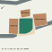
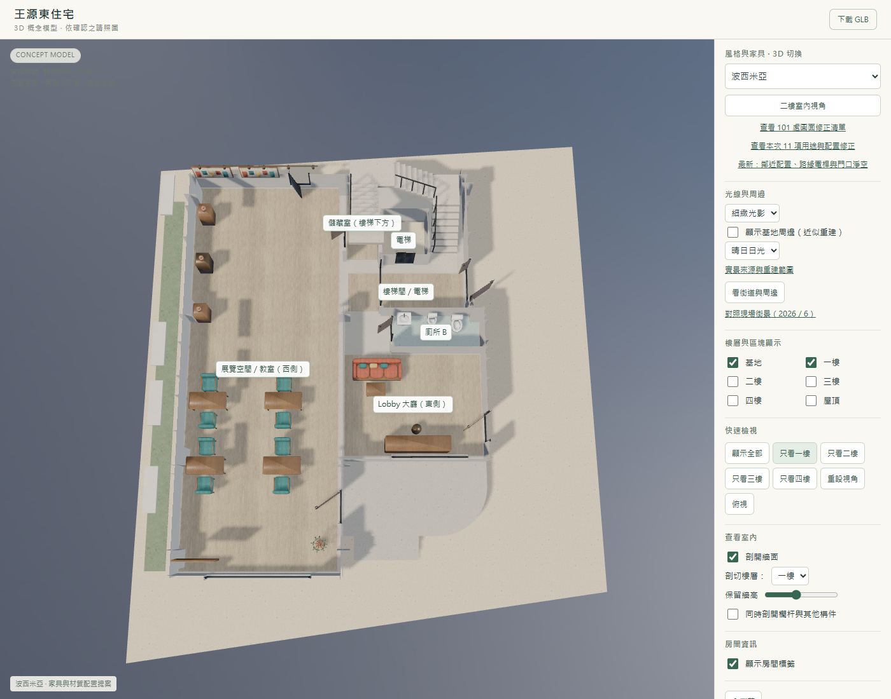
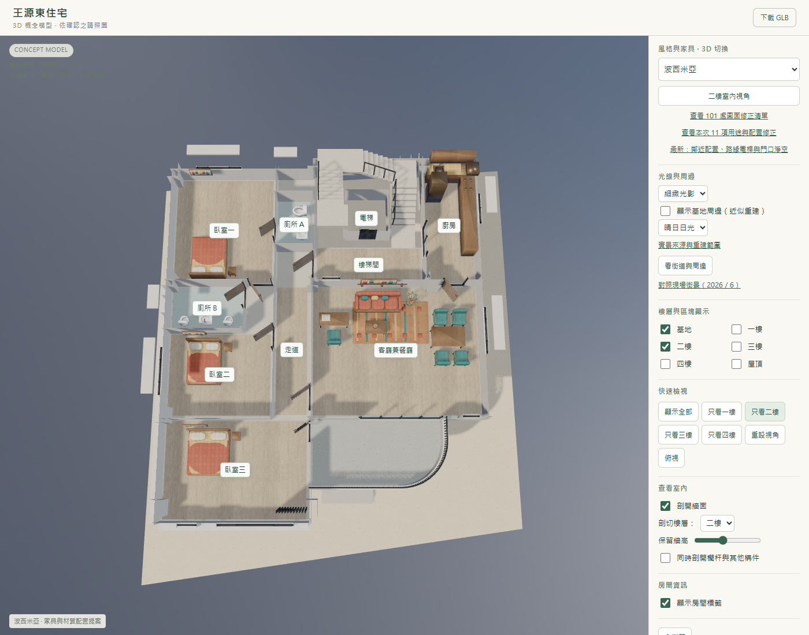
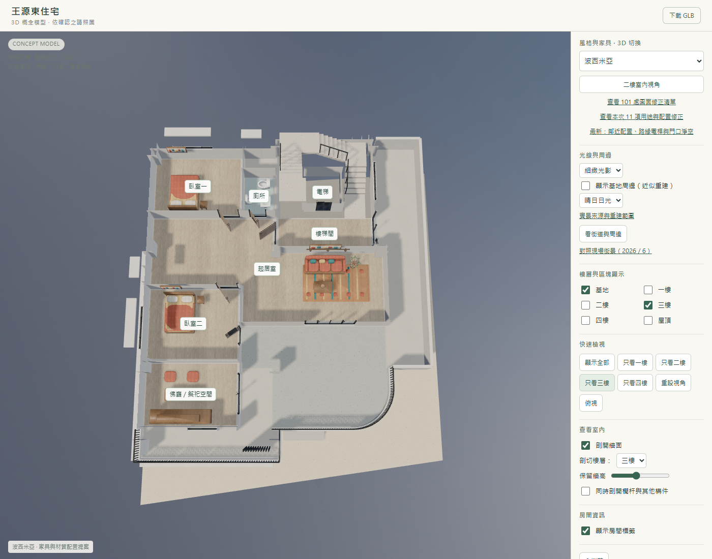
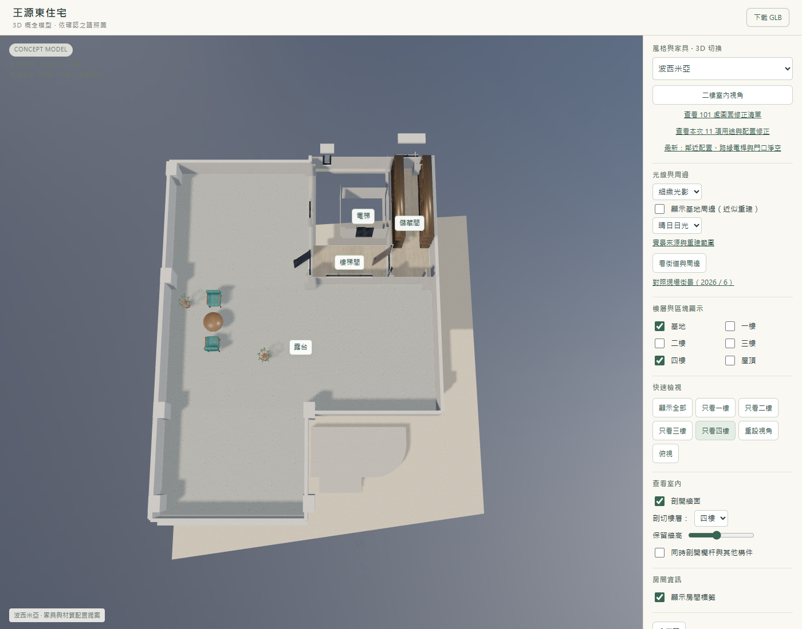

2026-09-10（台灣時間）。四套家具均同步套用。
| 要求 | 已執行修正 | 檢查 |
|---|---|---|
| 住宅靠近北、東、南鄰居，且不在馬路上 | 三側鄰房恢復近接關係，取消把它們往外推的配置方式。私人鋪面改為較明確的暖色，與深灰柏油區分。 | 三側間距約 1.1 公尺；住宅、私人鋪面與柏油重疊面積均為 0，三側最近連線未跨過道路。 |
| 電線桿沿路緣 | 四支桿位依實際生成的柏油邊緣定位，柱心置於路緣外約 28 公分；燈臂朝向道路，架空線依路線順序連接。 | 以匯出 GLB 的柱底頂點確認，柱身未占用柏油路面。 |
| 家具不能擋門口 | 移開一樓入口畫作、Lobby 櫃台及高椅，調整二樓餐桌椅並移除鄰近盆栽，將三樓供奉檯組向室內移。 | 四套風格各 31 處入口，檢查門前兩側 1.2 公尺深度範圍及平開門 0–90° 掃掠區；匯出家具幾何均無交疊。 |
近接關係依使用者確認；約 1 公尺的目標間距是概念配置假設，並非現地丈量，也不代表地界或法定退縮。門前 1.2 公尺指本次檢查的深度，不是保證通道寬度或建築法規認證；低於 6 公分的平整地毯及高於 2.05 公尺的燈具不列為本次家具障礙。
實際模型間距：北側紅瓦平房 1.14 公尺、東側白色舊住宅 1.10 公尺、南側白色三層住宅 1.10 公尺。




